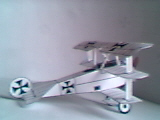

Triplano Fokker DR-1
 Este modelo está disponível em duas versões : preto e branco ou colorido.
Este modelo está disponível em duas versões : preto e branco ou colorido.Escolha o preto e branco se desejar fazer sua própria pintura na fuselagem.
A versão colorida procurou ser fiel à pintura feita pelo famoso barão Von Richthofen.

Modelo para Colorir
Baixe o arquivo para impressão na versão compactada triplanopb.zip (23Kb).Se não tiver o programa WINZIP, faça o download gratuito ou então baixe esta versão não compactada triplanopb.bmp (1.840Kb).
Modelo Colorido
 Baixe o arquivo para impressão na versão compactada triplanocor.zip (24Kb).
Baixe o arquivo para impressão na versão compactada triplanocor.zip (24Kb).Se não tiver o programa WINZIP, faça o download gratuito ou então baixe esta versão não compactada triplanocor.bmp (1.840Kb).